The EPICS DXP module provides support for the digital signal processor based multichannel analyzers from X-ray Instrumentation Associates (XIA). These devices all contain the functional equivalent of the shaping amplifier, ADC, and MCA of a conventional pulse-height analysis system. The term "DXP" in this document stands for Digital X-ray Processor, and refers to all models of the XIA hardware.
DXP currently supports the following hardware
DXP currently supports this hardware under the following operating systems and interfaces:
The features of the EPICS software, compared with software available from XIA are:
The software consists of the following components:
This document does not attempt to explain the meaning or use of all of the DXP parameters. The best documentation of the operation of the DXP modules is provided by XIA in the xMAP User's Manual and the Saturn User's Manual. The latter manual also describes the ProSpect software, which does not apply to EPICS users, but both provide an excellent description of the theory of digital pulse processing as implemented in the DXP models from XIA.
For many parameters in the following databases there is both an EPICS output record (ao, bo, mbbo, etc.) and a corresponding EPICS input record (ai, bi, mbbi, etc.). The output record is used to set a new value in the DXP hardware. The input record has an _RBV suffix, which stands for Read Back Value. It is used to read back the actual value from the hardware, which may be different from the requested value because of limitations of the hardware, errors, etc.
The following records are defined in the database dxpHighLevel.template. They control the high-level DXP parameters such as peaking time, etc. One instance of this database is loaded for each detector channel in the system. All of the record names in the template file are preceeded by the macro parameters $(P)$(R), where $(P) is the prefix for this detector system, and $(R) is the name of this specific channel. $(P) should be unique for all EPICS IOCs on the subnet, and $(R) is typically dxp1:, dxp2:, etc.
| Records in dxpHighLevel.template | ||
| Record Name | Record Type | Description |
|---|---|---|
| Trigger Filter Records | ||
|
TriggerPeakingTime TriggerPeakingTime_RBV |
ao ai |
The peaking time in microseconds for the trigger (fast) filter. The trigger filter is used to detect input pulses. |
|
TriggerGapTime TriggerGapTime_RBV |
ao ai |
The gap time in microseconds for the fast filter. This gap time is generally set to 0. |
|
TriggerThreshold TriggerThreshold_RBV |
ao ai |
The threshold in keV for the trigger filter. |
| Energy Filter Records | ||
|
PeakingTime PeakingTime_RBV |
ao ai |
The peaking time in microseconds for the energy (slow) filter. The energy filter is used to measure the energy of the input pulses. Increasing this time will generally improve the energy resolution at the expense of decreased throughput. |
|
GapTime GapTime_RBV |
ao ai |
The gap time in microseconds for the energy filter. The gap time is set to reflect the rise time of the input signal. |
|
EnergyThreshold EnergyThreshold_RBV |
ao ai |
The threshold in keV for the energy filter. This should generally be set to 0 except for soft x-ray spectroscopy. |
|
MaxWidth MaxWidth_RBV |
ao ai |
Maximum peak width in microseconds for pileup inspection. |
| Baseline Records | ||
|
BaselineFilterLength BaselineFilterLength_RBV |
mbbo longin |
The length of the baseline filter in samples. Menu values are powers of 2 from 8 to 2048. |
|
BaselineThreshold BaselineThreshold_RBV |
ao ai |
The threshold in keV for the baseline filter. |
|
BaselineCutPercent BaselineCutPercent_RBV |
ao ai |
The baseline cut value, in percent units of the baseline histogram. Baseline values outside the cut range will not be used in computing the baseline average, but they will still be included in the baseline histogram. Note: this parameter only applies to the Saturn and DXP2X, it is not used on the xMAP. |
|
BaselineCutEnable BaselineCutEnable_RBV |
bo bi |
A flag to enable or disable the baseline cut. Note: this parameter only applies to the Saturn and DXP2X, it is not used on the xMAP. |
| Pre-amp and Energy Range Records | ||
|
PreampGain PreampGain_RBV |
ao ai |
The gain of the detector pre-amp in mV/keV. Setting this value accurately is important, because it allows the DXP software to be correctly internally calibrated. PreampGain should be adjusted so that the requested MaxEnergy value agrees with the actual energy of the last MCA channel. |
|
DetectorPolarity DetectorPolarity_RBV |
bo bi |
Pre-amp polarity (not high-voltage polarity). 0=Negative, 1=Positive. Positive polarity means an x-ray pulse causes an increase in the pre-amp voltage output. This is normally defined in the .ini file, but is accessible to EPICS to allow quick determination of the correct polarity. |
|
ResetDelay ResetDelay_RBV |
ao ai |
For reset pre-amps the time in microseconds to recover after a pre-amp reset. |
|
MaxEnergy MaxEnergy_RBV |
ao ai |
The energy of the last channel in the spectrum in keV. If the actual energy of the last channel, determined by performing an MCA energy calibration, is not equal to this value, then one should modify the value of PrempGain. |
| MCABinWidth_RBV | ai | The width of each bin in the MCA spectrum in keV. This is computed from PreampGain and MaxEnergy. |
|
ADCPercentRule ADCPercentRule_RBV |
ao ai |
The percent of the range of the input ADC that should be used for pulses whose energy is at the energy of the CalibrationEnergy, which the driver automatically sets to be MaxEnergy/2, i.e. the middle channel of the spectrum. The normal range is 3-10% for reset pre-amplifiers and 30-50% for RC pre-amplifiers. The goal is to digitize the baseline noise into a few ADC bits (look at the ADC trace), but not have the value so large that the input signal drifts out of the ADC range too often (look at the number of drift ups and drift downs, NUMDRUPS0 and NUMDRDOS0). |
| CalibrationEnergy_RBV | ai | The energy at which the ADCPercentRule applies. The EPICS driver automatically sets this to MaxEnergy/2. |
| DynamicRange_RBV | ai | The dynamic range of the ADC. This is computed from PreampGain, MaxEnergy, ADCPercentRule. |
| Preset Counting Records | ||
|
PresetMode PresetMode_RBV |
mbbo mbbi |
The preset counting mode. On the xMAP the choices are:
|
|
PresetEvents PresetEvents_RBV |
longout longin |
The number of events to count for. Events are x-rays that were processed by the energy filter, and includes underflow and overflow events that are actually present in the spectrum. |
|
PresetTriggers PresetTriggers_RBV |
longout longin |
The number of triggers to count for. Triggers are x-rays that were processed by the trigger filter, and includes pileups and other events that are actually present in the spectrum. |
| Counting Statistics Records | ||
| ElapsedRealTime | ai | The elapsed real time. This is the same information as in the .ERTM field of the corresponding MCA record. |
| ElapsedLiveTime | ai | The elapsed live time. This is the same information as in the .ELTM field of the corresponding MCA record. |
| ElapsedTriggerLiveTime | ai | The elapsed live time for the trigger filter. |
| Triggers | longin | The number of trigger filter events. |
| Events | longin | The number of energy filter events. |
| InputCountRate | ai | The input count rate (ICR), which is the same as Triggers/ElapsedTriggerLiveTime. |
| OutputCountRate | ai | The output count rate (OCR), which is the same as Events/ElapsedRealTime. |
| SCA Records | ||
|
NumSCAs NumSCAs_RBV |
longout longin |
The number of SCAs (ROIs) to use. The maximum is 16, and this record is typically set to 16. The records for each SCA are defined in the database dxpSCA_16.template. |
| xMAP Mapping Records | ||
| CurrentPixel | longin | The current pixel in the mapping run. |
| Diagnostic Trace Records | ||
| BaselineHistogram | waveform | The baseline histogram array. The array is read from the hardware when this record is processed. The baseline histogram provides a valuable diagnostic of the electronic noise in the system. It should ideally be a perfect Gaussian, with a FWHM equal to the electronic noise in the baseline. Note: this record should not be processed while normal data acquisition is in progress or it will slow things down. |
|
TraceMode TraceMode_RBV |
mbbo mbbi |
The type of diagnostic trace information to return in the TraceData record. On the
xMAP the choices are:
|
| TraceData | waveform | The diagnostic trace data. The array is read from the hardware when this record is processed. The type of diagnostic trace data to read is selected with TraceMode, and the time per sample is selected with TraceTime. Note: this record should not be processed while normal data acquisition is in progress or it will slow things down. |
|
TraceTime TraceTime_RBV |
ao ai |
The time per sample in microseconds for the TraceData array. The minimum time depends on the hardware type; it is 0.1 microseconds for the 20 MHz Saturn and DXP2X, .05 microseconds for the 40MHz Saturn, and 0.02 microseconds for the xMAP. |
The following records are defined in the database dxpSCA_16.template. They control the 16 single-channel-analyzers (SCAs) for each chanel. Each SCA is defined by a low channel and a high channel. In normal MCA Spectra mode the counts in each SCA are computed by the DXP firmware when acquisition completes. This is essentially the same information as in the MCA record ROIs. However, the SCAs are also used in the fast SCA Mapping mode on the xMAP. In this mode only the total counts in each SCA are stored at each point in the map. This mode is faster than full spectrum mapping, and also uses much less disk space. The SCA definitions are also used on the Saturn when it is equipped with the optional SCA mapping hardware and firmware. The Saturn puts out a pulse on one of 16 TTL output lines when an x-ray falls within the channel range of that SCA. This allows very fast mapping with the Saturn, since there is no need to read the spectrum at each point in the scan. Note: in normal MCA spectra mode SCAs are permitted to overlap in channels. However in xMAP SCA mapping mode and Saturn ROI pulse output mode, the SCA definitions must not overlap. This is because, for performance reasons, each spectrum channel must be assigned to at most one SCA.
One instance of this database is loaded for each detector channel in the system. All of the record names in the template file are preceeded by the macro parameters $(P)$(R), where $(P) is the prefix for this detector system, and $(R) is the name of this specific channel.
| Records in dxpSCA_16.template | ||
| Record Name | Record Type | Description |
|---|---|---|
|
SCA$(N)Low SCA$(N)Low_RBV |
longout longin |
The low channel for SCA $(N), $(N)=0-15. Actual record names are SCA0Low, SCA1Low, etc. |
|
SCA$(N)High SCA$(N)High_RBV |
longout longin |
The high channel for SCA $(N), $(N)=0-15. Actual record names are SCA0High, SCA1High, etc. |
| SCA$(N)Counts | longin | The total counts for SCA $(N), $(N)=0-15. Actual record names are SCA0Counts, SCA1Counts, etc. |
The DXP firmware is actually controlled by a large number of low-level parameters. Each of these parameters is a 16-bit integer. Typically the user will only interact with the high-level parameters described above. But it can sometimes be useful to read or even modify one of these low-level parameters. The EPICS software provides a completely generic interface to these low-level parameters. When the driver initializes it queries the names of all of the low-level parameters, and makes these names available in stringin records. There is a longin record which provides the current value of each parameter, and a longout record which allows the parameter to be modified. Note that all parameters have a corresponding longout record, but some parameters are inherently read-only, so their longout records actually do nothing. The driver currently hardcodes a maximum of 220 low-level parameters, which is more than the number used by any of the existing firmware (209 is the current maximum, for the xMAP reset firmware). If a future firmware version has more parameters than this, then a single constant in the driver will need to be increased, and more records will need to be added to dxpLowLevel.template.
One instance of this database is loaded for each detector channel in the system. All of the record names in the template file are preceeded by the macro parameters $(P)$(R), where $(P) is the prefix for this detector system, and $(R) is the name of this specific channel.
| Records in dxpLowLevel.template | ||
| Record Name | Record Type | Description |
|---|---|---|
| NumLLParams | longin | The actual number of low-level parameters. |
| ReadLLParams | bo | Writing 1 to this record will read all of the low-level parameters for this channel. |
| LL$(N)Name | stringin | The firmware name for low-level parameter $(N), N=0-219. Actual record names are LL0Name, LL1Name, etc. |
| LL$(N)Val_RBV | longin | The readback value for low-level parameter $(N), N=0-219. Actual record names are LL0Val_RBV, LL1Val_RBV, etc. |
| LL$(N)Val | longout | The output value for low-level parameter $(N), N=0-219. Actual record names are LL0Val, LL1Val, etc. |
The following records are defined in the database dxpSystem.template. One instance of this database is loaded for each DXP system, since they control system-wide parameters. This database is loaded for both single-element (e.g. Saturn) and multi-element (e.g. DXP2X and xMAP) systems. All of the record names in the template file are preceeded by the macro parameter $(P), the prefix for this detector system.
| Records in dxpSystem.template | ||
| Record Name | Record Type | Description |
|---|---|---|
|
PollTime PollTime_RBV |
bo ao |
The EPICS driver rapidly polls the hardware when acquisition is active to detect when acquisition is complete. This record controls the poll time, which is typically .001 to .01 seconds. Decreasing the time decreases latency at the expense of more CPU time, and there is a minimum time required to poll the hardware. |
| SaveSystemFile | waveform | The name of a file in which to save the system information. This file is created by the XIA Handel software, and is the ".ini" file format used in the call to xiaInit() in the startup script. One can save the system information in this file, rather than using the EPICS save/restore system if desired. This is a waveform record with type DBF_UCHAR and length 256, rather than a stringout record, so that file paths/names longer than 40 characters can be used. Client applications must convert the file name to an unsigned char array when writing to this field. |
|
SaveSystem SaveSystem_RBV |
bo bi |
Writing 1 to this record causes the system information to be written to the file specified by SaveSystemFile. |
| EnableClientWait | bo | This record enables waiting for a client when acquisition completes. It can be used to wait for a client application to save data to disk, etc. |
| SetClientWait | bo | This record sets the ClientWait record to Busy if EnableClientWait is set to Enable. This record is processed by EraseStart and StartAll in the dxpMED.template database. |
| ClientWait | busy | This record forces processing to wait until a client clears it after acquisition starts when EnableClientWait is set to Enable. |
The following records are defined in the database dxpMED.template (MED stands for Multi-Element Detector). One instance of this database is loaded for each multi-element (i.e. DXP2X and xMAP) DXP system, since they control system-wide parameters. Only the records in this database that are intended for use by EPICS clients are documented here. Records that are not intended to be accessed from clients are not documented, since they may be changed in the future. Records in this database are implemented in several ways. Some are connected to an MCA record that is configured with a special address that signifies that it controls all detector channels. That record communicates directly with the driver. Other records are implemented in a State Notation Language program which monitors the system-wide records like PresetMode, and copies them to the individual detector records.
All of the record names in the template file are preceeded by the macro parameter $(P), the prefix for this detector system.
| Records in dxpMED.template | ||
| Record Name | Record Type | Description |
|---|---|---|
| Acquisition Control Records | ||
| EraseAll | bo | Erases all of the MCA records in this system. |
| EraseStart | bo | Erases and starts acquisition all of the MCA records in this system. In the xMAP mapping modes it starts a new mapping run. |
| StartAll | bo | Starts acquisition all of the MCA records in this system without first erasing any existing spectra. |
| StopAll | bo | Stops acquisition in MCA and mapping modes. |
| Preset Control Records | ||
| PresetMode | mbbo |
The preset counting mode. On the xMAP the choices are:
|
| PresetReal | ao | The preset real time. |
| PresetLive | ao | The preset live time. |
| PresetEvents | longout | The number of events to count for. Note that on the xMAP counting on a module stops whenever the first channel on that card reaches this value. |
| PresetTriggers | longout | The number of triggers to count for. Note that on the xMAP counting on a module stops whenever the first channel on that card reaches this value. |
| Status/Statistics Records | ||
| StatusAll | ai | Processing this record causes the status information (Acquiring, ElapsedReal, etc.) to be read. For maximum performance with short count times this record should have .SCAN=Passive. When this record is Passive the status information will still be read once when acquisition completes in normal MCA mode. |
| ReadAll | ai | Processing this record causes the MCA spectra to be read. For maximum performance with short count times this record should have .SCAN=Passive. When this record is Passive the MCA spectra will still be read once when acquisition completes in normal MCA mode. However, in order for the MCA spectra update in the xMAP MCA mapping mode this record must be set to periodically process (e.g. "2 second"). |
| Acquiring | bi | Acquisition status, 0=Done, 1=Acquiring. Acquiring will be 1 if any channel is acquiring. |
| ElapsedReal | ai | The elapsed real time. This value is the minimum of the elapsed real time of all system channels. |
| ElapsedLive | ai | The elapsed live time. This value is the minimum of the elapsed live time of all system channels. |
| DeadTime | ai | The dead time. This value is the maximum of the dead time of all system channels. |
| High-Level Parameter Records | ||
| CopyTriggerPeakingTime | bo | Writing 1 to this record copies the TriggerPeakingTime from channel 1 to all channels. |
| CopyTriggerGapTime | bo | Writing 1 to this record copies the TriggerGapTime from channel 1 to all channels. |
| CopyTriggerThreshold | bo | Writing 1 to this record copies the TriggerThreshold from channel 1 to all channels. |
| CopyPeakingTime | bo | Writing 1 to this record copies the PeakingTime from channel 1 to all channels. |
| CopyGapTime | bo | Writing 1 to this record copies the GapTime from channel 1 to all channels. |
| CopyEnergyThreshold | bo | Writing 1 to this record copies the EnergyThreshold from channel 1 to all channels. |
| CopyMaxWidth | bo | Writing 1 to this record copies the MaxWidth from channel 1 to all channels. |
| CopyBaselineCutPercent | bo | Writing 1 to this record copies the BaselineCutPercent from channel 1 to all channels. |
| CopyBaselineCutEnable | bo | Writing 1 to this record copies the BaselineCutEnable from channel 1 to all channels. |
| CopyBaselineThreshold | bo | Writing 1 to this record copies the BaselineThreshold from channel 1 to all channels. |
| CopyBaselineFilterLength | bo | Writing 1 to this record copies the BaselineFilterLength from channel 1 to all channels. |
| CopyPreampGain | bo | Writing 1 to this record copies the PreampGain from channel 1 to all channels. |
| CopyBaseMaxEnergy | bo | Writing 1 to this record copies the MaxEnergy from channel 1 to all channels. |
| CopyADCPercentRule | bo | Writing 1 to this record copies the ADCPercentRule from channel 1 to all channels. |
| Low-Level Parameter Records | ||
| ReadLLParams | bo | Writing 1 to this record reads the low-level parameters for all channels. Note: this record should be set to Passive during normal data acquisition, or it will slow things down. |
| Trace and Diagnostic Records | ||
| ReadBaselineHistograms | bo | Writing 1 to this record reads the BaselineHistogram for all channels. Note: this record should be set to Passive during normal data acquisition, or it will slow things down. |
| TraceModes | mbbo |
This record sets the TraceMode for each channel. On the xMAP the choices are:
|
| TraceTimes | ai | The time per sample in microseconds for the TraceData arrays. |
| ReadTraces | bo | Writing 1 to this record reads the TraceData for all channels. Note: this record should be set to Passive during normal data acquisition, or it will slow things down. |
| ROI and SCA Records | ||
| CopyROIChannel | bo | Writing 1 to this record copies all ROIs from channel 1 to all channels on a channel-by-channel basis. |
| CopyROIEnergy | bo | Writing 1 to this record copies all ROIs from channel 1 to all channels on an energy-by-energy basis, i.e. using the energy calibration information for each MCA. |
| CopyROI_SCA | bo | Writing 1 to this record copies every ROI for every channel to the corresponding SCA. |
The following records are defined in the database dxpXMAP.template. One instance of this database is loaded for an xMAP system, since they control system-wide parameters.
This document does not attempt to explain the mapping mode features of the xMAP that these records control. The user should read the chapter on Mapping Mode in the xMAP User's Manual to understand the mapping features of the xMAP. The short document on using the Handel library for mapping mode on the xMAP Handel Quick Start Manual for the xMAP can also be useful. Though the material discussed there was mostly useful for writing the EPICS driver, it can also help to understand how the system works.
All of the record names in the template file are preceeded by the macro parameter $(P), the prefix for this detector system.
| Records in dxpXMAP.template | ||
| Record Name | Record Type | Description |
|---|---|---|
| Mapping Mode Control Records | ||
|
CollectMode CollectMode_RBV |
mbbo mbbi |
Selects the collection mode for the xMAP system. The choices are:
|
|
PixelAdvanceMode PixelAdvanceMode_RBV |
mbbo mbbi |
Selects the pixel advance mode for xMAP system. The choices are:
|
| NextPixel | bo | Writing 1 to this record causes the system to advance to the next pixel in MCA mapping or SCA mapping modes. This is a "software" pixel advance, and can be issued any time mapping mode acquisition is in progress, regardless of the setting of PixelAdvanceMode. |
|
PixelsPerRun PixelsPerRun_RBV |
longout longin |
The total number of pixels to acquire in one "run" when acquisition starts. If this value is -1 then there is no preset number of pixels, and acquisition will continue forever until it is stopped manually with StopAll. |
|
PixelsPerBuffer PixelsPerBuffer_RBV |
longout longin |
The number of pixels per buffer. If AutoPixelsPerBuffer=Manual, then this value is used, rather than using the maximum possible value computed when AutoPixelsPerBuffer=Auto. The main reason to set this value manually is that the updates to statistics and MCA displays in mapping mode happen only when a buffer is read out. If the time per pixel is relatively long then decreasing PixelsPerBuffer will result in more frequent updates of the MCA and statistics displays. Setting this value too low when doing rapid mapping can result in buffer overflow. PixelsPerBuffer_RBV always contains the actual number of pixels per buffer. |
|
AutoPixelsPerBuffer AutoPixelsPerBuffer_RBV |
mbbo mbbi |
Flag controlling how the number of pixels per buffer is determined. Choices are 0=Manual and 1=Auto. If Manual is selected then the number of pixels per buffer is controlled by the PixelsPerBuffer record. If Auto is selected then the maximum number of pixels that the 2MB xMAP buffer can hold is automatically computed. |
| BufferSize_RBV | longin | The size of the buffer being used in units of 16-bit words. This will be the first dimension of the array passed to the plugins when a buffer is read out. The maximum value is 1M=1048576, but it can be less than this depending on the value of PixelsPerBuffer_RBV. |
|
IgnoreGate IgnoreGate_RBV |
mbbo mbbi |
Flag controlling whether the Gate input signal is used to inhibit counting. Choices are 0=No and 1=Yes. If IgnoreGate=Yes then the Gate input can be used as a pixel advance signal, but its high or low state will not influence whether counting is enabled, i.e. only the transitions are significant. If IgnoreGate=No then counting will be inhibited when the Gate input is low (if InputLogicPolarity=Normal) or high (if InputLogicPolarity=Inverted). |
|
InputLogicPolarity InputLogicPolarity_RBV |
mbbo mbbi |
Flag controlling the polarity of the Gate input signal. Choices are 0=Normal, 1=Inverted. In Normal mode a low level on the Gate input inhibits counting (if IgnoreGate=No) and a high-to-low transition performs a pixel advance (if PixelAdvanceMode=Gate). In Inverted mode these levels are the opposite, i.e. a high level inhibits counting and a low-to-high transition performs a pixel advance. |
|
SyncCount SyncCount_RBV |
longout longin |
The divisor used on the Sync input for pixel advance if PixelAdvanceMode=Sync. Allowed values are 1 to 65,535. This value can be used to divide the Sync clock. For example, if the Sync input were connected to the pulse output of a stepper motor controller, then setting SyncCount=10 would perform a pixel advance on every 10'th stepper motor pulse. SyncCount=1 results in no clock division, i.e. every Sync input pulse results in a pixel advance. |
| Parameter Download Control Records | ||
|
AutoApply AutoApply_RBV |
mbbo mbbi |
Flag controlling whether xMAP parameters are automatically downloaded to the hardware
("apply" operation) each time a parameter is changed, or whether they are only downloaded
when the Apply record is set to 1. Choices are 0=No, 1=Yes. This flag can dramatically
affect performance, because the process of downloading parameters to the xMAP is
very slow, requiring about 0.3 seconds. If many xMAP parameters need to be changed
it is much faster to do the following:
|
| Apply | longout | Writing 1 to this record forces an "apply" operation, downloading the parameters for all channels to the xMAP hardware. This is not needed if AutoApply=Yes, but it can greatly improve performance to set AutoApply=No and write to this record after modifying a large number of parameters. |
To install the EPICS DXP software with a Saturn on a Windows or Linux computer do the following:
Most users will just download the pre-built binaries. The Windows binaries should run on almost any version of Windows. Windows XP and Windows 2000 have been tested.
The Linux binaries are built with Redhat Fedora kernel 2.6.27 and gcc version 4.3.0. These binaries should run on many recent versions of Linux, but this has not been extensively tested.
Building from the source code requires downloading EPICS base and all of the required synApps components. To build from source code on Windows for the win32-x86 architecture requires Microsoft Visual Studio .NET 2003 or later, and the perl and make packages from Cygwin. To build from source code on Windows for the cygwin32-x86 architecture requires the gcc, g++, perl and make packages from Cygwin. It is beyond the scope of this document to describe how to build the source code. Consult other EPICS documentation for this.
To use the EPICS DXP software with a Saturn on a Windows PC do the following:
$ cd /cygdrive/c/epics # Or wherever you have chosen to put the EPICS software
$ tar xzvf dxpStandalone_2-10.tgz # Unpack the tar file.
$ cd iocBoot/iocSaturn
$ unix2dos *.fdd *ini
This is necessary because these files may have Unix line terminators, depending
on how they were unpacked from the distribution.
$ cd iocBoot/iocSaturn
$ chmod +x *.bat
This is necessary because these files may not have this permission, depending on
how they were unpacked from the distribution.
$ mkdir /cygdrive/c/epics_adls
$ find /cygdrive/c/epics -name '*.adl' -exec cp -f -p -v {} /cygdrive/c/epics_adls \;
Define the environment variable EPICS_DISPLAY_PATH to point to C:\epics_adls. For
the Windows shell use the Windows Control Panel/System/Advanced/Environment Variables.
For the Cygwin shell edit your .bashrc file.To use the EPICS DXP software with a Saturn on a Linux computer do the following:
tar xvzf dxpStandalone_2-10.tgz
> cd iocBoot/iocSaturn
> dos2unix *.fdd *.ini
This is necessary because these files may have Windows line terminators, depending
on how they were unpacked from the distribution.
$ mkdir /home/epics/epics_adls
$ find /home/epics/epics -name '*.adl' -exec cp -f -p -v {} /home/epics/epics_adls \;
Define the environment variable EPICS_DISPLAY_PATH to point to /home/epics/epics_adls.
Do this by editing your .cshrc or .bashrc file.
> cd bin/linux-x86
> su root
(password)
> chmod +s startWithIopl3
> exit
The dxpApp application can then be run without root privilege as follows:
> cd iocBoot/iocSaturn
> ../../bin/linux-x86/startWithIopl3 ../../bin/linux-x86/dxpApp st.cmd
You can also copy startWithIopl3 to a directory like /usr/local/bin or ~/bin that
is in your PATH. That way it can be run without having to specify the path.
> cd bin/linux-x86
> su root
(password)
> chmod +s /bin/linux-x86/dxpApp
> exit
The dxpApp application can then be run without root priviledge as follows:
> cd iocBoot/iocSaturn
> ../../bin/linux-x86/dxpApp st.cmd
> cd iocBoot/iocSaturn
> su root
(password)
> ../../bin/linux-x86/dxpApp st.cmd
or
> sudo ../../bin/linux-x86/dxpApp st.cmd
# XIA Saturn
usbsaturn 0x0003 0x10e9 0x0700 0x0000 0x0000 0x00 0x00 0x00 0x00 0x00 0x00 0x00000000
usbsaturn 0x0003 0x10e9 0x0701 0x0000 0x0000 0x00 0x00 0x00 0x00 0x00 0x00 0x00000000
These lines instruct the hotplug facility to run the script /etc/hotplug/usb/usbsaturn
whenever the Saturn is added to the system. 10e9 is the vendor ID for the Saturn,
and 0700 and 0701 are the product IDs for the USB 1.1 and USB 2.0 versions of the
Saturn.
#!/bin/bash
if [ "${ACTION}" = "add" ] && [ -f "${DEVICE}" ]
then
chmod 666 "${DEVICE}"
fi
[root@vincent usb]# ls -lt /proc/bus/usb/001/021
-rw-rw-rw- 1 root root 134 Jan 8 12:20 /proc/bus/usb/001/021
SUBSYSTEM=="usb",ACTION=="add",ATTRS{idVendor}=="10e9",ATTRS{idProduct}=="0700",MODE="0666"
SUBSYSTEM=="usb",ACTION=="add",ATTRS{idVendor}=="10e9",ATTRS{idProduct}=="0701",MODE="0666"
These rules instruct the udev facility to set the permissions on the USB device
to 666 (owner, group and world read/write) for the Saturn whenever it is added to
the system. 10e9 is the vendor ID for the Saturn, and 0700 and 0701 are the product
IDs for the USB 1.1 and USB 2.0 versions of the Saturn. Note that the 10e9 ID is
case sensitive!
SUBSYSTEM=="usb_device",ACTION=="add",SYSFS{idVendor}=="10e9",SYSFS{idProduct}=="0700",MODE="0666"
SUBSYSTEM=="usb_device",ACTION=="add",SYSFS{idVendor}=="10e9",SYSFS{idProduct}=="0701",MODE="0666"
In the older version the SUBSYSTEM is "usb_device" rather than "usb", and the SYSFS keyword rather
than ATTRS is used.
$ /sbin/udevcontrol reload_rules
baja:/etc/udev/rules.d>ls -lt /dev/bus/usb/005/021
crw-rw-rw- 1 root root 189, 532 2008-01-07 16:08 /dev/bus/usb/005/021
However, on some Linux versions libusb uses /proc/bus/usb by default, rather than
/dev/bus/usb, so the permissions set by udev will not have the desired affect. This
can be fixed by defining the environment variable USB_DEVFS_PATH to be /dev/bus/usb.
In fact I now add the following command to the EPICS IOC startup script (st.cmd)
on Linux when using USB, just before the xiaInit command:
# On Linux execute the following command so that libusb uses /dev/bus/usb
# as the file system for the USB device.
# On some Linux systems it uses /proc/bus/usb instead, but udev
# sets the permissions on /dev, not /proc.
epicsEnvSet USB_DEVFS_PATH /dev/bus/usb
This could obviously be done in the shell startup script instead if desired.
$ cd iocBoot/iocSaturn
$ chmod +x START_IOC*
This is necessary because these files may not have this permission, depending on
how they were unpacked from the distribution.There are several things that should be done to run Saturn system under the EPICS software.
> cd iocBoot/iocSaturn
> ./START_IOC
You may need to edit the START_IOC script depending on how you chose to solve the
root priviledge problem, and whether startWithIopl3 is in your path. You should
see the EPICS IOC commands, and you should hear clicking sounds from the Saturn.
If everything works correctly, you can then begin to collect and display spectra.After verifying that you can control the Saturn from medm there are some things you should do to customize your installation. First, you should edit saturn.ini to set the polarity, the pre-amp gain, and the time after reset (for reset pre-amps) or the RC time constant (for RC pre-amps). Consult the Saturn User's Manual for information on how to determine and set these parameters.
The saturn.ini file will contain lines like the following:
type_value = 10. channel0_gain = 1.7 channel0_polarity = +
The example IOC directory, iocSaturn, creates EPICS process variables with names like dxpSaturn:dxp1.PKTIM, where dxpSaturn is the "prefix" for the process variable names, dxp1 is the DXP record name, and PKTIM is the field name. This is fine for installations where there will be at most one Saturn on the subnet. However, in many cases there will be the possibility of more than one Saturn running EPICS on the same subnet. If this is the case then it is essential that each one use a different prefix, because EPICS process variable names must be unique on a subnet. Here is how to give your Saturn a unique name, and still be able to upgrade the EPICS software easily. It is recommended that you follow these instructions even if you don't have name conflicts on your IOC, so that files you edit are in a directory that will not be overwritten when you upgrade the EPICS software.
The EPICS DXP application uses the EPICS save/restore facility. This means that all of the important parameters that you might change when running the Saturn are saved in files in the subdirectory called autosave/ under your IOC directory. These parameters include the peaking time, the update rates for displays and nearly 200 other parameters. The next time you start EPICS it will restore these values automatically from the file called autosave/auto_settings.sav. It is a good idea to make copies of this file from time to time so that you can get back to old settings if the file is lost or corrupted.
The following is a typical startup script for the Saturn.
#########################################
< envPaths
# Tell EPICS all about the record types, device-support modules, drivers,
# etc. in this build from dxpApp
dbLoadDatabase("../../dbd/dxp.dbd")
dxp_registerRecordDeviceDriver(pdbbase)
# On Linux execute the following command so that libusb uses /dev/bus/usb
# as the file system for the USB device.
# On some Linux systems it uses /proc/bus/usb instead, but udev
# sets the permissions on /dev, not /proc.
epicsEnvSet USB_DEVFS_PATH /dev/bus/usb
# Initialize the XIA software
# Set logging level (1=ERROR, 2=WARNING, 3=XXX, 4=DEBUG)
xiaSetLogLevel(2)
# Edit saturn.ini to match your Saturn speed (20 or 40 MHz),
# pre-amp type (reset or RC), and interface type (EPP, USB 1.0, USB 2.0)
xiaInit("saturn.ini")
xiaStartSystem
# DXPConfig(serverName, ndetectors, ngroups, pollFrequency)
DXPConfig("DXP1", 1, 1, 100)
# DXP record
# Execute the following line if you have a Vortex detector or
# another detector with a reset pre-amplifier
dbLoadRecords("../../dxpApp/Db/dxp2x_reset.db","P=dxpSaturn:, R=dxp1, INP=@asyn(DXP1 0)")
# Execute the following line if you have a Ketek detector or
# another detector with an RC pre-amplifier
#dbLoadRecords("../../dxpApp/Db/dxp2x_rc.db","P=dxpSaturn:, R=dxp1, INP=@asyn(DXP1 0)")
# MCA record
dbLoadRecords("$(MCA)/mcaApp/Db/mca.db", "P=dxpSaturn:, M=mca1, DTYP=asynMCA,INP=@asyn(DXP1 0),NCHAN=2048")
dbLoadRecords("../../dxpApp/Db/mcaCallback.db", "P=dxpSaturn:, M=mca1,INP=@asyn(DXP1 0)")
# Template to copy MCA ROIs to DXP SCAs
dbLoadTemplate("roi_to_sca.substitutions")
# Setup for save_restore
< ../save_restore.cmd
save_restoreSet_status_prefix("dxpSaturn:")
dbLoadRecords("$(AUTOSAVE)/asApp/Db/save_restoreStatus.db", "P=dxpSaturn:")
set_pass0_restoreFile("auto_settings.sav")
set_pass1_restoreFile("auto_settings.sav")
### Scan-support software
# crate-resident scan. This executes 1D, 2D, 3D, and 4D scans, and caches
# 1D data, but it doesn't store anything to disk. (See 'saveData' below for that.)
dbLoadRecords("$(SSCAN)/sscanApp/Db/scan.db","P=dxpSaturn:,MAXPTS1=2000,MAXPTS2=1000,MAXPTS3=10,MAXPTS4=10,MAXPTSH=2048")
# Debugging flags
#xiaSetLogLevel(4)
#asynSetTraceMask DXP1 0 255
#var mcaRecordDebug 10
#var dxpRecordDebug 10
iocInit
### Start up the autosave task and tell it what to do.
# Save settings every thirty seconds
create_monitor_set("auto_settings.req", 30, P=dxpSaturn:)
### Start the saveData task.
saveData_Init("saveData.req", "P=dxpSaturn:")
#########################################
Here are some comments on the commands in this file.
######################################### < envPaths #########################################
This command loads the envPaths file that defines the paths to other EPICS modules. You will need to edit this file if you installed the pre-built binaries rather than building from source code.
#########################################
dbLoadDatabase("../../dbd/dxp.dbd")
dxp_registerRecordDeviceDriver(pdbbase)
#########################################
These commands load the EPICS database definition files.
# On Linux execute the following command so that libusb uses /dev/bus/usb # as the file system for the USB device. # On some Linux systems it uses /proc/bus/usb instead, but udev # sets the permissions on /dev, not /proc. epicsEnvSet USB_DEVFS_PATH /dev/bus/usb
This command forces libusb to use the /dev/bus/usb filesystem, rather than /proc/bus/usb, which some kernels use by default. This is needed because udev sets permissions on /dev/bus/usb, not /proc/bus/usb.
#########################################
# Initialize the XIA software
# Set logging level (1=ERROR, 2=WARNING, 3=XXX, 4=DEBUG)
xiaSetLogLevel(2)
# Edit saturn.ini to match your Saturn speed (20 or 40 MHz),
# pre-amp type (reset or RC), and interface type (EPP, USB 1.0, USB 2.0)
xiaInit("saturn.ini")
xiaStartSystem
#########################################
These commands set the logging (debugging) level for the XIA Handel software. It initializes the XIA software with the appropriate .ini file, and then starts the XIA software. You will hear clicking in the Saturn box when the xiaStartSystem command is executing.
#########################################
# DXPConfig(serverName, ndetectors, ngroups, pollFrequency)
DXPConfig("DXP1", 1, 1, 100)
#########################################
This command starts the EPICS "asyn" server called DXP1. It defines the number of detectors in the system, and the number of detector groups. We use 1 detector group (containing all of the detectors) to efficiently do operations that should be done on all detectors simultaneously. The pollFrequency determines the rate at which the poller thread will check for acquisition complete. 100 Hz is typical, it does not put a significant load on the system, but reduces the average latency in determining when the run is complete to 5ms.
#########################################
# DXP record
# Execute the following line if you have a Vortex detector or
# another detector with a reset pre-amplifier
dbLoadRecords("../../dxpApp/Db/dxp2x_reset.db","P=dxpSaturn:, R=dxp1, INP=@asyn(DXP1 0)")
# Execute the following line if you have a Ketek detector or
# another detector with an RC pre-amplifier
#dbLoadRecords("../../dxpApp/Db/dxp2x_rc.db","P=dxpSaturn:, R=dxp1, INP=@asyn(DXP1 0)")
# MCA record
dbLoadRecords("$(MCA)/mcaApp/Db/mca.db", "P=dxpSaturn:, M=mca1, DTYP=asynMCA,INP=@asyn(DXP1 0),NCHAN=2048")
dbLoadRecords("../../dxpApp/Db/mcaCallback.db", "P=dxpSaturn:, M=mca1,INP=@asyn(DXP1 0)")
# Template to copy MCA ROIs to DXP SCAs
dbLoadTemplate("roi_to_sca.substitutions")
#########################################
These commands load the EPICS databases for the MCA and DXP records. The names of the PV, the number of MCA channels, and the type of detector pre-amp are all chosen in these commands. The mcaCallback.db file is used with the poller to cause the MCA records to read data when acquisition completes.
#########################################
# Setup for save_restore
< ../save_restore.cmd
save_restoreSet_status_prefix("dxpSaturn:")
dbLoadRecords("$(AUTOSAVE)/asApp/Db/save_restoreStatus.db", "P=dxpSaturn:")
set_pass0_restoreFile("auto_settings.sav")
set_pass1_restoreFile("auto_settings.sav")
### Scan-support software
# crate-resident scan. This executes 1D, 2D, 3D, and 4D scans, and caches
# 1D data, but it doesn't store anything to disk. (See 'saveData' below for that.)
dbLoadRecords("$(SSCAN)/sscanApp/Db/scan.db","P=dxpSaturn:,MAXPTS1=2000,MAXPTS2=1000,MAXPTS3=10,MAXPTS4=10,MAXPTSH=2048")
#########################################
These commands initialize the save/restore system that remembers changes in parameter settings when the IOC is rebooted. They load the databases for general purpose scanning to be done in the IOC. The maximum number of points in each nested scan is defined here, as is the maximum number of channels of MCA data that can be stored in the scanH record.
######################################### # Debugging flags #xiaSetLogLevel(4) #asynSetTraceMask DXP1 0 255 #var mcaRecordDebug 10 #var dxpRecordDebug 10 #########################################
These commands set the debugging level of the EPICS software. asynSetTraceMask controls the debugging in drvDXP and devDXP. This uses the asynTrace facility, with different bits turning on different types of output. 1 turns on only error reporting, 255 turns on all messages. mcaRecordDebug and dxpRecordDebug turn on messages from the mcaRecord and dxpRecord respectively. 0 turns off messages, 10 turns on all messages.
#########################################
iocInit
### Start up the autosave task and tell it what to do.
# Save settings every thirty seconds
create_monitor_set("auto_settings.req", 30, P=dxpSaturn:)
### Start the saveData task.
saveData_Init("saveData.req", "P=dxpSaturn:")
#########################################
These commands start the EPICS software (iocInit), and start the save/restore software saving parameters every 30 seconds, and start the task that saves data from the scan records. Edit the file saveData.req to change what additional EPICS PVs are saved with every scan. You might want to include the MCA record energy calibration fields, etc.
Note that there is a different startup scripts, st_med.st, and a corresonding .adl file, 1element_dxp.adl. This startup script and medm display is almost identical to the st.cmd and single_element_dxp.adl medm display. The difference is that it uses PVs to control acquisition that are compatible with the multi-element databases used by the DXP2X and xMAP. Client software that is configured to work with the multi-element detectors will work with the Saturn if this startup script is used.
The following are screen shots of the medm screens provided for the Saturn.
Main control screen for Saturn.
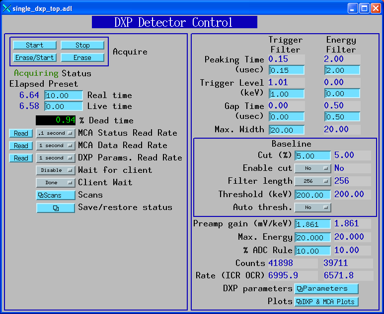
Complete screen for low-level DXP parameters and control.
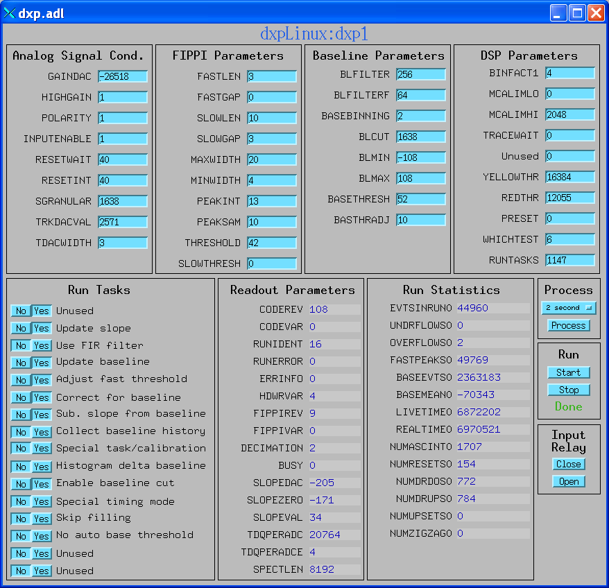
Screen for SCA display and control.
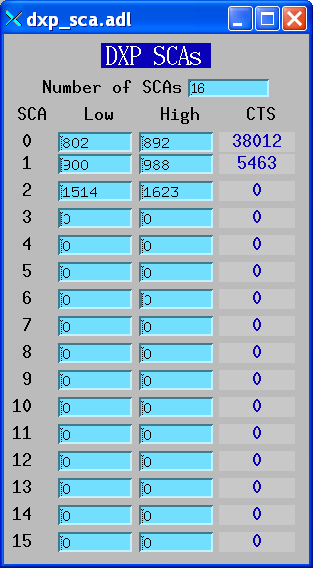
Screen to display the spectral data and control acquisition.
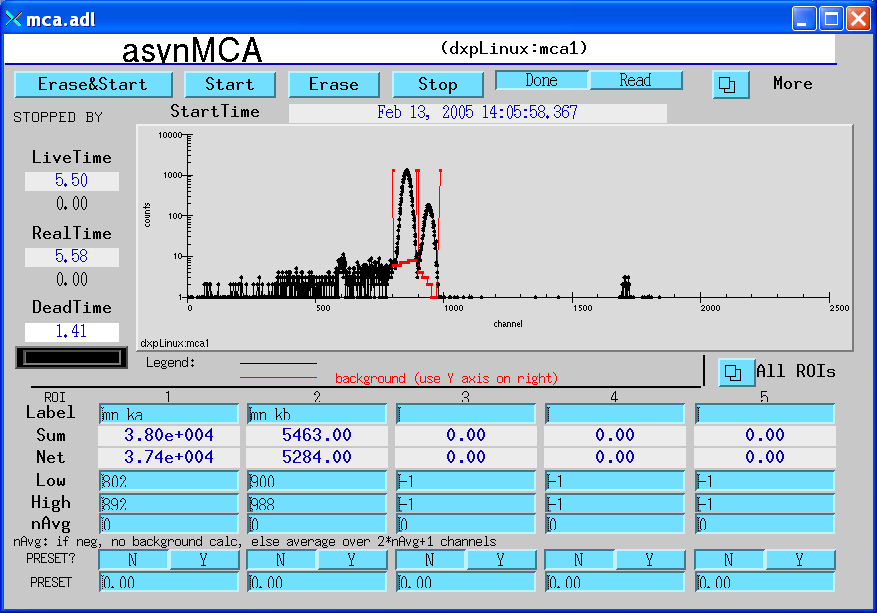
Screen to display the baseline histogram and control its update rate.
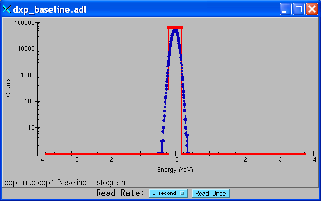
Screen to display the baseline history and control its update rate.
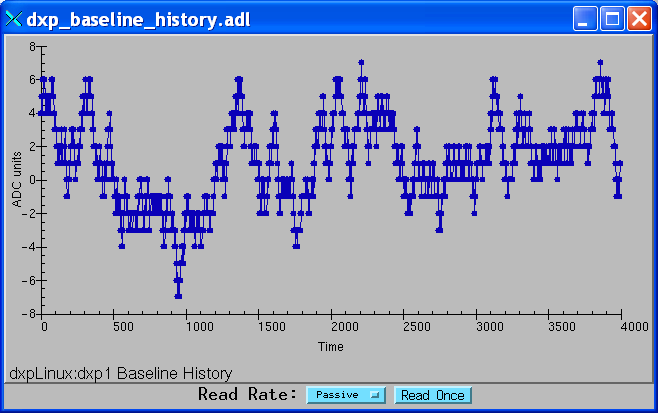
Screen to display the ADC trace, and control the time per point and update rate.
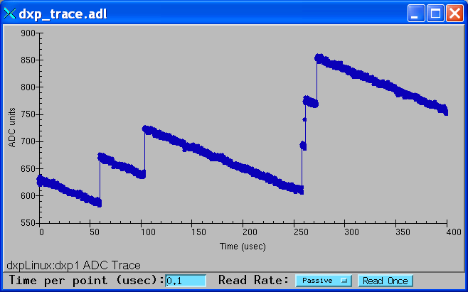
To install the EPICS DXP software with an xMAP system on a Windows computer do the following:
The example IOC directory, iocXMAP, creates EPICS process variables with names like dxpXMAP:dxp1.PKTIM, where dxpXMAP: is the "prefix" for the process variable names, dxp1 is the DXP record name, and PKTIM is the field name. This is OK for installations where there will be at most one xMAP system on the subnet. However, in many cases there will be the possibility of more than one xMAP running EPICS on the same subnet. If this is the case then it is essential that each one use a different prefix, because EPICS process variable names must be unique on a subnet. Here is how to give your xMAP system a unique name, and still be able to upgrade the EPICS software easily. It is recommended that you follow these instructions even if you don't have name conflicts on your IOC, so that files you edit are in a directory that will not be overwritten when you upgrade the EPICS software.
There are several things that should be done to run xMAP system under the EPICS software.
cd iocBoot/iocXMAP # Or the new directory you created
../../bin/cygin-x86/dxpApp.exe 16element.cmd # Or 4element.cmd, etc.
The following is a typical startup script for the xMAP.
#########################################
< envPaths
# Tell EPICS all about the record types, device-support modules, drivers,
# etc. in this build from dxpApp
dbLoadDatabase("$(DXP)/dbd/dxp.dbd")
dxp_registerRecordDeviceDriver(pdbbase)
# Setup for save_restore
< ../save_restore.cmd
save_restoreSet_status_prefix("dxpXMAP:")
dbLoadRecords("$(AUTOSAVE)/asApp/Db/save_restoreStatus.db", "P=dxpXMAP:")
set_pass0_restoreFile("auto_settings16.sav")
set_pass1_restoreFile("auto_settings16.sav")
# Set logging level (1=ERROR, 2=WARNING, 3=INFO, 4=DEBUG)
xiaSetLogLevel(2)
xiaInit("xmap16.ini")
xiaStartSystem
# DXPConfig(serverName, ndetectors, ngroups, pollFrequency)
DXPConfig("DXP1", 16, 1, 100)
dbLoadTemplate("16element.template")
#xiaSetLogLevel(4)
#asynSetTraceMask DXP1 0 255
#asynSetTraceIOMask DXP1 0 2
#var dxpRecordDebug 10
### Scan-support software
# crate-resident scan. This executes 1D, 2D, 3D, and 4D scans, and caches
# 1D data, but it doesn't store anything to disk. (See 'saveData' below for that.)
dbLoadRecords("$(SSCAN)/sscanApp/Db/scan.db","P=dxpXMAP:,MAXPTS1=2000,MAXPTS2=1000,MAXPTS3=10,MAXPTS4=10,MAXPTSH=2048")
iocInit
seq dxpMED, "P=dxpXMAP:, DXP=dxp, MCA=mca, N_DETECTORS=16"
### Start up the autosave task and tell it what to do.
# Save settings every thirty seconds
create_monitor_set("auto_settings16.req", 30, "P=dxpXMAP:")
### Start the saveData task.
saveData_Init("saveData.req", "P=dxpXMAP:")
Here are some comments on the commands in this file.
< envPaths #########################################
This command loads the envPaths file that defines the paths to other EPICS modules. You will need to edit this file if you installed the pre-built binaries rather than building from source code.
#########################################
# Tell EPICS all about the record types, device-support modules, drivers,
# etc. in this build from dxpApp
dbLoadDatabase("$(DXP)/dbd/dxp.dbd")
dxp_registerRecordDeviceDriver(pdbbase)
#########################################
These commands load the EPICS database definition files.
#########################################
# Setup for save_restore
< ../save_restore.cmd
save_restoreSet_status_prefix("dxpXMAP:")
dbLoadRecords("$(AUTOSAVE)/asApp/Db/save_restoreStatus.db", "P=dxpXMAP:")
set_pass0_restoreFile("auto_settings16.sav")
set_pass1_restoreFile("auto_settings16.sav")
#########################################
These commands initialize the save/restore system that remembers changes in parameter settings when the IOC is rebooted.
#########################################
# Set logging level (1=ERROR, 2=WARNING, 3=INFO, 4=DEBUG)
xiaSetLogLevel(2)
xiaInit("xmap16.ini")
xiaStartSystem
#########################################
These commands set the logging (debugging) level for the XIA Handel software. It initializes the XIA software with the appropriate .ini file, and then starts the XIA software. You will hear clicking in the xMAP modules when the xiaStartSystem command is executing. The xamp16.ini file is the same type of file that xManager requires. If you have xManager running on your system you can just copy that .ini file to your IOC directory for EPICS. This file must be edited from the one that is distributed with the EPICS software to define the PCI bus slots in your PXI crate.
#########################################
# DXPConfig(serverName, ndetectors, ngroups, pollFrequency)
DXPConfig("DXP1", 16, 1, 100)
#########################################
This command starts the EPICS "asyn" server called DXP1. It defines the number of detectors in the system, and the number of detector groups. We use 1 detector group (containing all of the detectors) to efficiently do operations that should be done on all detectors simultaneously. The pollFrequency determines the rate at which the poller thread will check for acquisition complete. 100 Hz is typical, it does not put a significant load on the system, but reduces the average latency in determining when the run is complete to 5ms.
#########################################
dbLoadTemplate("16element.template")
#########################################
This command loads the template file that in turns loads the databases for the MCA and DXP records. The content of the template file is discussed below.
######################################### # Debugging flags #xiaSetLogLevel(4) #asynSetTraceMask DXP1 0 255 #asynSetTraceIOMask DXP1 0 2 #var dxpRecordDebug 10 #########################################
These commands set the debugging level of the EPICS software. asynSetTraceMask controls the debugging in drvDXP and devDXP. This uses the asynTrace facility, with different bits turning on different types of output. 1 turns on only error reporting, 255 turns on all messages. mcaRecordDebug and dxpRecordDebug turn on messages from the mcaRecord and dxpRecord respectively. 0 turns off messages, 10 turns on all messages.
#########################################
### Scan-support software
# crate-resident scan. This executes 1D, 2D, 3D, and 4D scans, and caches
# 1D data, but it doesn't store anything to disk. (See 'saveData' below for that.)
dbLoadRecords("$(SSCAN)/sscanApp/Db/scan.db","P=dxpXMAP:,MAXPTS1=2000,MAXPTS2=1000,MAXPTS3=10,MAXPTS4=10,MAXPTSH=2048")
#########################################
These commands load the databases for general purpose scanning to be done in the IOC. The maximum number of points in each nested scan is defined here, as is the maximum number of channels of MCA data that can be stored in the scanH record.
#########################################
iocInit
seq dxpMED, "P=dxpXMAP:, DXP=dxp, MCA=mca, N_DETECTORS=16"
### Start up the autosave task and tell it what to do.
# Save settings every thirty seconds
create_monitor_set("auto_settings16.req", 30, "P=dxpXMAP:")
### Start the saveData task.
saveData_Init("saveData.req", "P=dxpXMAP:")
#########################################
The iocInit starts the EPICS software. The seq command starts the dxpMED State-Notation-Language program that implements the "Copy 1 To All" feature for the DXP records. It also copies MCA ROIs to DXP SCAs, and computes combined elapsed and live times, etc. The last two commands start the save/restore task and start the task that saves data from the scan records. Edit the file saveData.req to change what additional EPICS PVs are saved with every scan. You might want to include the MCA record energy calibration fields, etc.
The 16element.template file looks like this:
#########################################
file "$(DXP)/dxpApp/Db/dxpMED.db"
{
pattern
{P, MCAALL, INP }
{dxpXMAP: mcaAll, "@asyn(DXP1,-1)"}
}
file "$(MCA)/mcaApp/Db/simple_mca.db"
{
pattern
{P, M, DTYP, INP PREC, CHANS}
{dxpXMAP: mca1 "asynMCA", "@asyn(DXP1,0)", 2, 2048}
{dxpXMAP: mca2 "asynMCA", "@asyn(DXP1,1)", 2, 2048}
{dxpXMAP: mca3 "asynMCA", "@asyn(DXP1,2)", 2, 2048}
{dxpXMAP: mca4 "asynMCA", "@asyn(DXP1,3)", 2, 2048}
{dxpXMAP: mca5 "asynMCA", "@asyn(DXP1,4)", 2, 2048}
{dxpXMAP: mca6 "asynMCA", "@asyn(DXP1,5)", 2, 2048}
{dxpXMAP: mca7 "asynMCA", "@asyn(DXP1,6)", 2, 2048}
{dxpXMAP: mca8 "asynMCA", "@asyn(DXP1,7)", 2, 2048}
{dxpXMAP: mca9 "asynMCA", "@asyn(DXP1,8)", 2, 2048}
{dxpXMAP: mca10 "asynMCA", "@asyn(DXP1,9)", 2, 2048}
{dxpXMAP: mca11 "asynMCA", "@asyn(DXP1,10)", 2, 2048}
{dxpXMAP: mca12 "asynMCA", "@asyn(DXP1,11)", 2, 2048}
{dxpXMAP: mca13 "asynMCA", "@asyn(DXP1,12)", 2, 2048}
{dxpXMAP: mca14 "asynMCA", "@asyn(DXP1,13)", 2, 2048}
{dxpXMAP: mca15 "asynMCA", "@asyn(DXP1,14)", 2, 2048}
{dxpXMAP: mca16 "asynMCA", "@asyn(DXP1,15)", 2, 2048}
{dxpXMAP: mcaAll "asynMCA", "@asyn(DXP1,-1)", 2, 2048}
}
# DXP records
file "$(DXP)/dxpApp/Db/xmap_reset.db"
{
pattern
{P, R, INP }
{dxpXMAP: dxp1 "@asyn(DXP1,0)"}
{dxpXMAP: dxp2 "@asyn(DXP1,1)"}
{dxpXMAP: dxp3 "@asyn(DXP1,2)"}
{dxpXMAP: dxp4 "@asyn(DXP1,3)"}
{dxpXMAP: dxp5 "@asyn(DXP1,4)"}
{dxpXMAP: dxp6 "@asyn(DXP1,5)"}
{dxpXMAP: dxp7 "@asyn(DXP1,6)"}
{dxpXMAP: dxp8 "@asyn(DXP1,7)"}
{dxpXMAP: dxp9 "@asyn(DXP1,8)"}
{dxpXMAP: dxp10 "@asyn(DXP1,9)"}
{dxpXMAP: dxp11 "@asyn(DXP1,10)"}
{dxpXMAP: dxp12 "@asyn(DXP1,11)"}
{dxpXMAP: dxp13 "@asyn(DXP1,12)"}
{dxpXMAP: dxp14 "@asyn(DXP1,13)"}
{dxpXMAP: dxp15 "@asyn(DXP1,14)"}
{dxpXMAP: dxp16 "@asyn(DXP1,15)"}
#{dxpXMAP: dxpAll "@asyn(DXP1,-1)"}
}
#########################################
This file defines the mca and DXP records that get loaded. It defines the maximum number of channels in the MCA records. It also loads the multi-element DXP database (dxpMED.db). This database is used with the dxpMED.st SNL program to do collective actions on multiple DXP or MCA records.
Note that there are supplied startup scripts, template files and auto_settings.req files for 4, 8, 12, and 16 channel xMAP systems. If you have a different number of channels you need to create your own files using these as examples. There are currently only medm screens for a 16-element detector system. You will need to copy and edit these for different numbers of detectors. For fewer detectors than 16 you can simply use the 16element files temporarily and ignore the ugly white fields for non-existant records!
The following are screen shots of the medm screens provided for the xMAP.
Main control screen for 16element xMAP system.
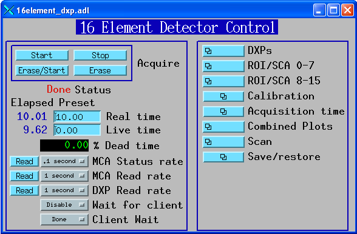
Complete screen for low-level DXP parameters and control.
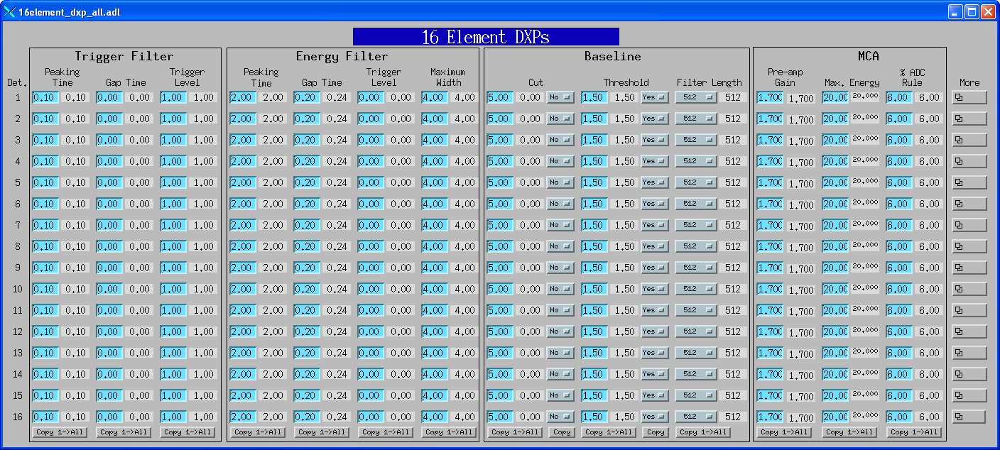
Screen to display trigger counts and events in run, plus ICR and OCR.
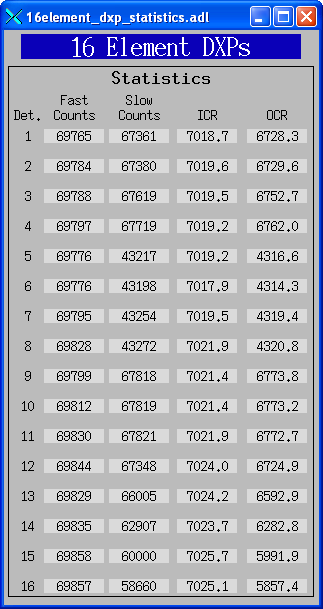
Screen to display ROI and SCA counts for a single ROI/SCA on each detector.
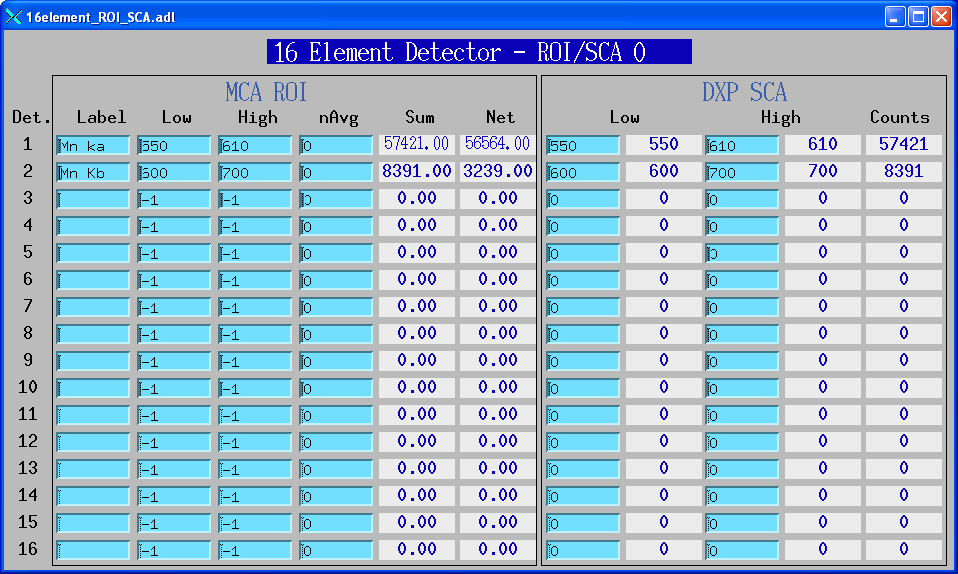
Screen to display energy calibration parameters for each detector.
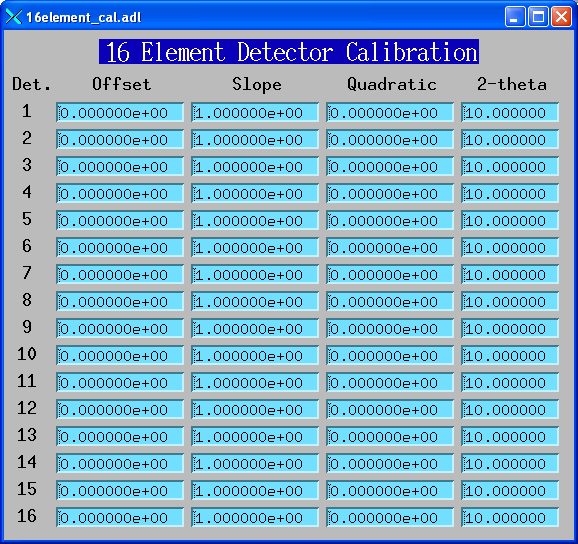
Screen to display preset and elapsed times for each detector.
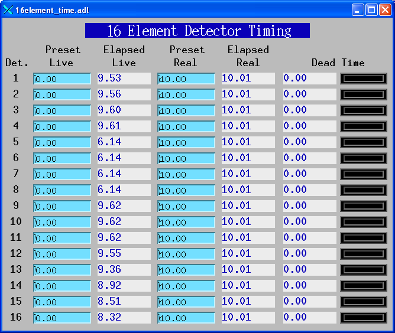
Screen to display the spectral data for each detector.
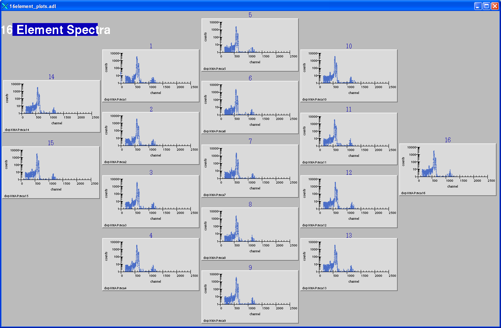
Screen to display the baseline histograms and control the update rate.
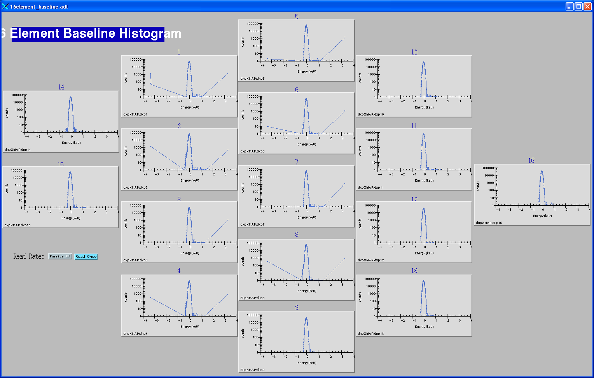
Screen to display the baseline histories and control the update rate.
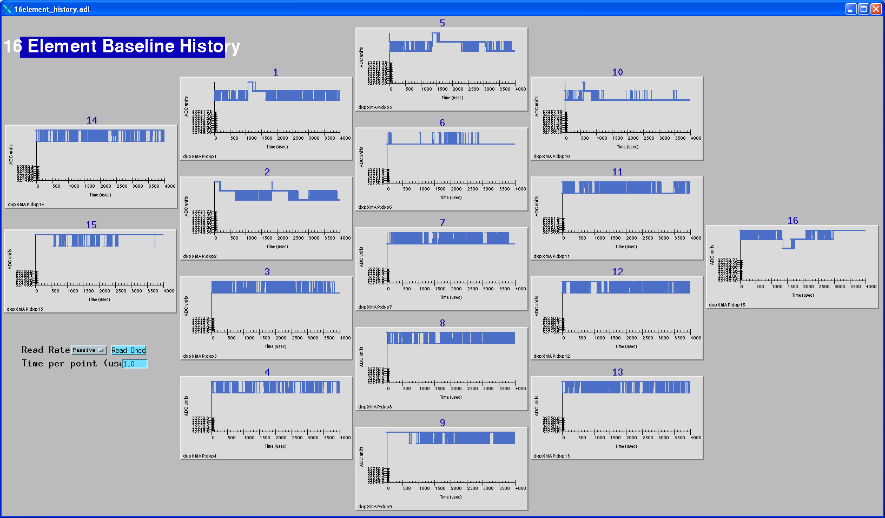
Screen to display the ADC traces, and control the time per point and update rate.
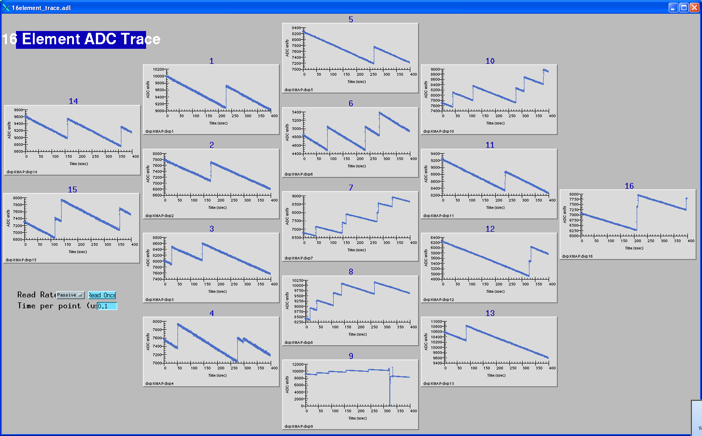
The DXP4C2X CAMAC module is supported under vxWorks. It works with the Kinetic Systems 3922/2922 VME to CAMAC adapter.
The example IOC directory, iocDXP2X, creates EPICS process variables with names like dxp2X:dxp1.PKTIM, where dxp2X: is the "prefix" for the process variable names, dxp1 is the DXP record name, and PKTIM is the field name. This is OK for installations where there will be at most one DXP2X system on the subnet. However, in many cases there will be the possibility of more than one DXP2X running EPICS on the same subnet. If this is the case then it is essential that each one use a different prefix, because EPICS process variable names must be unique on a subnet. Here is how to give your DXP2X system a unique name, and still be able to upgrade the EPICS software easily. It is recommended that you follow these instructions even if you don't have name conflicts on your IOC, so that files you edit are in a directory that will not be overwritten when you upgrade the EPICS software.
The overall architecture of the EPICS DXP software is shown in the diagram below. At the top level are EPICS Channel Access client applications, such as the IDL MCA Display program, the IDL Multi-Element Detector (MED) Display program, medm, spec, and others.
At the next level is the dxpMED State Notation Language program, which is used to synchronize acquisition and settings for multi-element detectors. This program also uses EPICS Channel Access, but it typically runs in the same EPICS IOC that is controlling the XIA hardware.
Next are the DXP and MCA records, which communicate with device support. In the case of the MCA record, this device support is devMcaAsyn, which is itself device-independent, and talks to drvDxp. The device support for the dxpRecord is specific to the XIA hardware. drvDxp and devDxp both communicate with the XIA Handel library, which calls the XIA Xerxes library. Xerxes calls the machine dependent libraries, md_epics and md_win95, which call the operating system specific hardware libraries to perform the actual low-level I/O.
The poller thread rapidly polls the acquisition status (acquiring or done) while acquisition is in progress. This thread issues callbacks when acquisition is complete to records that have registered with it. It is used to minimize latencies, so that the MCA records will be processed when acquisition completes without the MCA records themselves having to process rapidly. The poll rate is set in the DXPConfig() command in the startup script. It is typically set to 100Hz, which does not significantly load the system, but provides a 5msec average latency in determining when acquisition is complete.
Tests were done with R2-7 of the dxp module to measure the performance of the Saturn and xMAP systems in rapidly collecting complete spectra in a scan. The tests were done with the following conditions:
Note that these measurements were made using the simple unbuffered mode on the xMAP. The xMAP has 4MB of onboard memory per channel, and the release 0.9.1 firmware allows one to use this memory to buffer many spectra, in response to a software or hardware trigger signal. This can be used to rapidly acquire many spectra, and then read them out quickly at the end. The EPICS software does not yet support this feature, but will in a future release.
| XIA system | Number of detectors | Seconds/1000 scan points | Scan points/second | Total spectra/second | Data rate (MB/second) |
|---|---|---|---|---|---|
| Saturn (EPP) | 1 | 30.1 | 33.2 | 33.2 | 0.27 |
| Saturn (USB 1.0) | 1 | 80.5 | 12.4 | 12.4 | 0.10 |
| Saturn (USB 2.0) | 1 | 23.5 | 42.6 | 42.6 | 0.35 |
| xMAP | 4 (1 xMAP) | 45.7 | 21.9 | 87.5 | 0.72 |
| xMAP | 8 (2 xMAPs) | 50.8 | 19.7 | 157.5 | 1.29 |
| xMAP | 12 (3 xMAPs) | 61.7 | 16.2 | 194.5 | 1.59 |
| xMAP | 16 (4 xMAPs) | 78.1 | 12.8 | 204.9 | 1.68 |
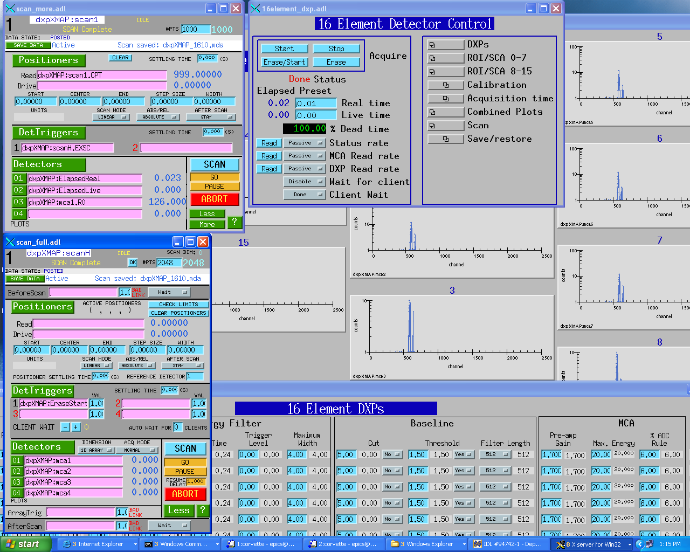